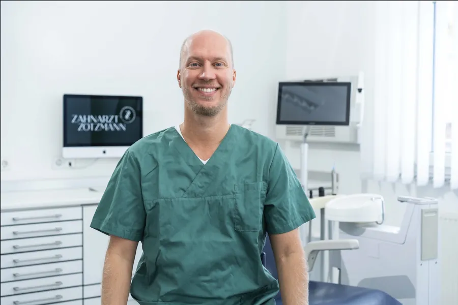

ZahnmedizinChristian ZotzmannZentrum für biologische Zahnmedizin
Wir gewinnen Patienten-Anfragen und Vertrauen über unseren YouTube-Kanal, ohne selber viel Zeit dafür einzusetzen.
YouTube-SystemWebdesignAnzeigen
Ganze Fallstudie ansehen